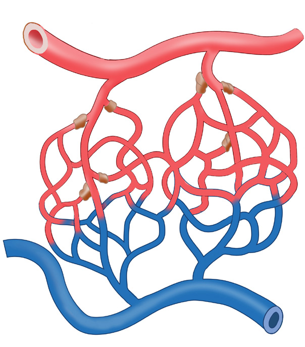

117
Student’s Book - Form Two

Biology for Secondary Schools
At the arterial end of the capillary, there is high blood pressure. This forces fluid out through the tiny pores in the capillaries. The fluid is composed of water, oxygen, hormones, and nutrients. This fluid bathes the cells. It is called tissue fluid or interstitial fluid.
The substances in this fluid diffuse into the cells through the cell membranes.
In addition, the waste products from the cells diffuse into the tissue fluid.
These wastes include carbon dioxide, minerals, and nitrogenous wastes.
Figure 5.16 shows the formation of tissue fluid.
The tissue fluid constitutes an internal environment in which tissue cells bath.
The cells get their oxygen and nutrients
from the fluid and excrete their metabolic
wastes into it.
The aorta, which is the largest artery in the body, branches into smaller arteries that in turn branch into even smaller vessels called arterioles, as shown in Figure 5.15. Arterioles branch into smallest vessels called arterial capillaries that are in contact with the tissues of the body. The capillaries have

Artery
Arterial capillaries
Pre-capillaries sphincter
Venous capillaries
Venule
Vein
Arteriole
Figure 5.15: Arterial and venous blood capillaries
tiny pores that allow some components of blood to filter into the tissues.
In the same way, the vena cava, which is the largest vein, branches into smaller veins called venules as shown in Figure 5.15. These venules branch into smallest vessels called venous capillaries that are in contact with the body tissues.
08/04/2026 10:18:32